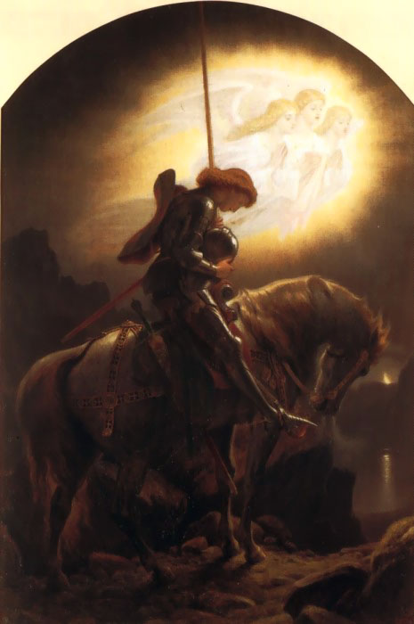

Sir Galahad es un personaje ficticio, caballero de la Mesa Redonda del rey Arturo y uno de los tres que alcanzaron el Grial en las leyendas artúricas. Es el hijo bastardo de Sir Lanzarote y Elaine de Corbenic (descendiente de José de Arimatea), y es reconocido por su gallardía y pureza. Su primera aparición es el ciclo Lanzarote-Grial, y su historia se toma en trabajos posteriores tales como el ciclo post-Vulgata y La muerte de Arturo de sir Thomas Malory.
Su Vida
La concepción de Galahad viene de cuando Elaine de Corbenic, hija del Rey del Grial Pelles, usa magia para engañar a Lanzarote para hacerle pensar que es Ginebra. Duermen juntos, pero al descubrir el engaño, Lanzarote la abandona y vuelve a la corte de Arturo. Galahad está al cuidado de su tía abuela, la abadesa de un convento de monjas, donde es criado. "Galahad" era el nombre original de Lanzarote, pero se lo habían cambiado cuando era todavía un niño. Merlín profetiza que Galahad sobrepasaría a su padre en valor y lograría alcanzar el santo Grial.
Al alcanzar la edad adulta, Galahad se reunió con su padre, quien lo convirtió en caballero. Es llevado a la corte de rey Arturo en Camelot durante Pentecostés. Sin darse cuenta del peligro en el que se ponía, sir Galahad caminó alrededor de la mesa redonda en medio de las festividades y tomó el Asiento peligroso. Este lugar había sido mantenido vacante sólo para la persona que lograra alcanzar el santo Grial; para cualquier otra persona que se sentara allí se mostraría inmediatamente fatal.